Conformance suite¶
The conformance suite is the set of 24 scripted scenarios behind every result in the paper. This page lists them, explains how a run is scored, and shows what the default pipeline does on each one.
The scenarios live in decision_testbench.SCENARIOS and are not edited. bikeped.scenarios exposes the same list, in the same order, as the suite conformance.
The 24 scenarios¶
The table is read from decision_testbench.SCENARIOS. Duration is the last waypoint time plus 0.5 s (get_scenario_duration), rounded to 0.1 s.
| # | Scenario | Expected state | Pedestrians | Cyclists | Duration (s) | Braking profile |
|---|---|---|---|---|---|---|
| 0 | Safe Crossing | safe | 1 | 0 | 6.5 | bicycle |
| 1 | Bike Approaches Ped | alert | 1 | 1 | 7.5 | bicycle |
| 2 | High-Speed Near Miss | alert | 1 | 1 | 6.5 | bicycle |
| 3 | Multiple VRUs | alert | 3 | 2 | 8.5 | bicycle |
| 4 | Occluded Emergence | alert | 1 | 1 | 6.5 | bicycle |
| 5 | Parallel Paths | warning | 1 | 1 | 8.5 | bicycle |
| 6 | Bikes Only | idle | 0 | 2 | 5.5 | bicycle |
| 7 | Fast Approach | alert | 1 | 1 | 6.5 | ebike |
| 8 | Speed Variant | alert | 1 | 2 | 10.5 | bicycle |
| 9 | Counter-Flow on Crosswalk | alert | 1 | 1 | 6.5 | bicycle |
| 10 | Multi-Speed Converging | alert | 2 | 3 | 8.5 | bicycle |
| 11 | Wheelchair User | alert | 1 | 1 | 27.2 | bicycle |
| 12 | Stopped Pedestrian | alert | 1 | 1 | 13.5 | bicycle |
| 13 | Cross-Street Cyclist | alert | 1 | 1 | 8.5 | bicycle |
| 14 | E-Scooter | alert | 1 | 1 | 7.5 | ebike |
| 15 | Child Pedestrian | alert | 1 | 1 | 13.8 | bicycle |
| 16 | Overtake from Behind | alert | 1 | 1 | 12.5 | bicycle |
| 17 | Cyclist Abort | safe | 1 | 1 | 8.0 | bicycle |
| 18 | Dense Pedestrian Group | alert | 8 | 1 | 10.4 | bicycle |
| 19 | Diagonal Jaywalker | alert | 1 | 1 | 9.5 | bicycle |
| 20 | Swerving Cyclist | alert | 1 | 1 | 8.0 | bicycle |
| 21 | Late Turn Toward Ped | alert | 1 | 1 | 7.5 | bicycle |
| 22 | U-Turn Cyclist | alert | 1 | 1 | 8.5 | bicycle |
| 23 | Accelerating E-Bike | alert | 1 | 1 | 7.5 | ebike |
Twenty scenarios expect alert, two expect safe, one expects warning and one expects idle.
Twenty-one of the 24 contain at least one frame that the ground-truth danger model labels as dangerous. The three that contain none are Safe Crossing, Parallel Paths and Bikes Only. In two scenarios, Occluded Emergence and Fast Approach, every danger frame is too late for a warning to help the pedestrian, so they have danger frames and no actionable ones (see Scoring).
Families¶
bikeped.scenarios tags each conformance scenario with a family.
| Family | Count | Scenarios (index) |
|---|---|---|
safe-crossing |
3 | Safe Crossing (0), Parallel Paths (5), Bikes Only (6) |
standard-approach |
5 | Bike Approaches Ped (1), Speed Variant (8), Counter-Flow on Crosswalk (9), Cross-Street Cyclist (13), Overtake from Behind (16) |
high-speed |
4 | High-Speed Near Miss (2), Fast Approach (7), E-Scooter (14), Accelerating E-Bike (23) |
multi-agent |
3 | Multiple VRUs (3), Multi-Speed Converging (10), Dense Pedestrian Group (18) |
edge-case |
3 | Occluded Emergence (4), Stopped Pedestrian (12), Diagonal Jaywalker (19) |
accessibility |
2 | Wheelchair User (11), Child Pedestrian (15) |
non-linear |
4 | Cyclist Abort (17), Swerving Cyclist (20), Late Turn Toward Ped (21), U-Turn Cyclist (22) |
Braking profiles¶
Three scenarios set 'vehicle': 'ebike': Fast Approach, E-Scooter and Accelerating E-Bike. The other 21 use the default bicycle profile.
| Profile | Reaction time (s) | Deceleration (m/s²) |
|---|---|---|
bicycle |
0.84 | 1.96 |
ebike |
0.84 | 6.0 |
The profile is applied twice. The danger model uses it to decide whether the cyclist can still stop, and make_pipeline passes the same values to the pipeline's speed-adaptive stopping distance. The sources of the values are listed in Safety model.
Scoring¶
simulate_scenario steps a scenario at 30 FPS from t = 0 to its duration. Each frame gets a pipeline state and a ground-truth label with two tiers. A frame is a danger frame when the cyclist is on a collision course and cannot stop in time. It is also actionable when the time to collision is still longer than the pedestrian reaction time, so a warning can change the outcome.
| Column | Definition |
|---|---|
TP |
Frames in alert that are actionable. |
FN |
Actionable frames without alert. |
FP |
Frames in alert with no danger of either tier. |
TN |
Frames without alert and without danger. |
Sens |
TP divided by the number of actionable frames. |
Spec |
TN divided by the number of frames without danger. |
SevFN |
Severity-weighted miss rate: severity summed over missed actionable frames, divided by severity summed over all actionable frames. |
Lat |
Seconds from the first actionable frame to the first alert at or after it. |
WarnBgt |
Smallest time to closest approach, measured at each transition into alert. |
RxnAdq |
Share of those transitions that leave more than 1.87 s, the reaction time assumed for a distracted pedestrian. |
Fatigue |
Fraction of all frames spent in alert. |
Exp |
The scenario's expected_dominant. The testbench prints it and does not score against it. |
Danger frames that are not actionable count on neither side: an alert during one is not a false positive, and silence during one is not a false negative.
The TOTAL row pools the frame counts over all scenarios before dividing. Its SevFN is the mean over the scenarios that have actionable frames.
Results with the default pipeline¶
$ python decision_testbench.py
Loaded calibration: FOV=197.90 cx=1752.7 cy=1804.5 f=1013.3 R=1750 frame=3500x3500 pad=3840 pitch=0 k1=0 k2=0
Running all scenarios with Default pipeline...
SCENARIO RESULTS -- N=58, d=[1.9,24.8]m, v_min=0.147, k=2
Scenario TP FP FN TN Sens Spec SevFN Lat WarnBgt RxnAdq Fatigue Exp
--------------------------------------------------------------------------------------------------------------------
Safe Crossing 0 0 0 196 0.0% 100.0% 0.0% N/A N/A N/A 0.0% safe
Bike Approaches Ped 86 25 14 101 86.0% 80.2% 26.3% 0.47 3.5s 100% 49.1% alert
High-Speed Near Miss 97 0 17 82 85.1% 100.0% 18.0% 0.47 3.3s 100% 49.5% alert
Multiple VRUs 113 29 0 114 100.0% 79.7% 0.0% 0.00 3.9s 100% 55.5% alert
Occluded Emergence 0 0 0 164 0.0% 100.0% 0.0% N/A 1.0s 0% 10.7% alert
Parallel Paths 0 0 0 256 0.0% 100.0% 0.0% N/A N/A N/A 0.0% warning
Bikes Only 0 0 0 166 0.0% 100.0% 0.0% N/A N/A N/A 0.0% idle
Fast Approach 0 0 0 147 0.0% 100.0% 0.0% N/A 1.6s 0% 23.0% alert
Speed Variant 54 83 0 179 100.0% 68.3% 0.0% 0.00 4.3s 100% 43.4% alert
Counter-Flow on Crosswalk 19 0 2 114 90.5% 100.0% 9.5% 0.07 2.6s 100% 35.7% alert
Multi-Speed Converging 72 81 0 103 100.0% 56.0% 0.0% 0.00 4.2s 100% 59.8% alert
Wheelchair User 83 0 15 651 84.7% 100.0% 26.9% 0.50 4.9s 100% 14.6% alert
Stopped Pedestrian 33 0 1 307 97.1% 100.0% 2.9% 0.03 3.2s 100% 20.2% alert
Cross-Street Cyclist 51 0 1 143 98.1% 100.0% 1.9% 0.03 3.7s 100% 39.5% alert
E-Scooter 15 0 1 154 93.8% 100.0% 6.2% 0.03 2.3s 100% 28.8% alert
Child Pedestrian 99 22 31 263 76.2% 92.3% 26.2% 0.47 4.5s 100% 29.2% alert
Overtake from Behind 21 0 2 287 91.3% 100.0% 8.7% 0.07 2.9s 100% 17.6% alert
Cyclist Abort 69 6 0 166 100.0% 96.5% 0.0% 0.00 2.4s 100% 31.1% safe
Dense Pedestrian Group 83 27 0 203 100.0% 88.3% 0.0% 0.00 3.5s 100% 35.1% alert
Diagonal Jaywalker 82 30 12 162 87.2% 84.4% 12.2% 0.13 4.0s 100% 39.2% alert
Swerving Cyclist 83 26 2 130 97.6% 83.3% 4.1% 0.07 3.5s 100% 45.2% alert
Late Turn Toward Ped 88 32 0 106 100.0% 76.8% 0.0% 0.00 3.8s 100% 53.1% alert
U-Turn Cyclist 21 0 3 110 87.5% 100.0% 7.6% 0.03 2.2s 100% 45.7% alert
Accelerating E-Bike 40 0 6 123 87.0% 100.0% 8.9% 0.20 3.3s 100% 40.7% alert
--------------------------------------------------------------------------------------------------------------------
TOTAL 1209 361 107 4427 91.9% 92.5% 8.4%
Alert fatigue (mean fraction of time in alert): 31.9%
Pooled over the suite, the default parameters alert on 91.9% of actionable frames and stay silent on 92.5% of frames without danger.
This invocation feeds the pipeline the scripted positions as they are. The paper's comparison table adds the fisheye localisation error, which python decision_testbench.py --compare applies unless --no-bbox-noise is given. Both runs are described in Testbench and Reproducing the paper.
A few rows need the scoring rules to read correctly. Occluded Emergence and Fast Approach show no true positives and no misses because they have no actionable frames. The pipeline does alert in both (10.7% and 23.0% of frames), 1.0 s and 1.6 s before closest approach, which is less than the 1.87 s a distracted pedestrian needs. Cyclist Abort expects safe as its dominant state and still contains 69 actionable frames before the cyclist turns away, all of which are caught.
Dominant state¶
python -m bikeped.scenarios evaluate --suite conformance scores the dominant state instead of frames: the most severe state (alert > warning > safe > idle) that the pipeline holds for at least 0.3 s in total over the run. Under that rule the default pipeline matches 23 of the 24 paper labels. The one miss is Cyclist Abort, where the pipeline alerts and the paper's label is safe.
$ python -m bikeped.scenarios evaluate --suite conformance
scenario dur ag danger alert false lead s (per interval) dominant expected ok
--------------------------------------------------------------------------------------------------------------
safe-crossing 6.5 1 0.00 0.00 0.00 - safe safe yes
bike-approaches-ped 7.5 2 3.33 3.67 0.83 -0.5,+1.6 alert alert yes
...
cyclist-abort 8.0 2 2.30 2.50 0.20 +0.1 alert safe NO
...
--------------------------------------------------------------------------------------------------------------
24 scenarios, dominant state matches expected in 23; 18 of 27 danger intervals alerted no later than one frame after onset; false-alert time 12.27 s
Catalog¶
| Scenario | Family | Expected | Duration | Agents | |
|---|---|---|---|---|---|
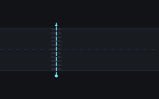 |
Safe Crossing safe-crossingA pedestrian crosses the full crosswalk at about 2.7 m/s with no cyclist anywhere in the scene. |
safe-crossing | safe | 6.5 s | 1 person |
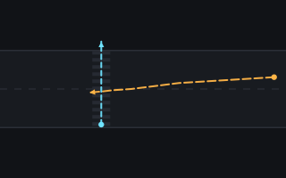 |
Bike Approaches Ped bike-approaches-pedA cyclist rides in along the road from 34 m at 8 m/s, slows to about 2 m/s and passes through the crosswalk just behind a pedestrian walking across. |
standard-approach | alert | 7.5 s | 1 person, 1 bike |
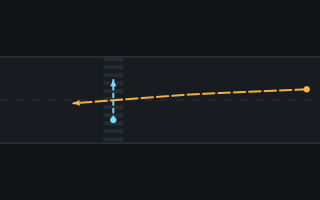 |
High-Speed Near Miss high-speed-near-missA cyclist at about 7 m/s crosses the crosswalk while a slow pedestrian is in the middle of it, so the danger window is short. |
high-speed | alert | 6.5 s | 1 person, 1 bike |
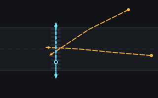 |
Multiple VRUs multiple-vrusThree pedestrians cross in both directions while one cyclist rides along the road and a second comes in diagonally from the far side. |
multi-agent | alert | 8.5 s | 3 person, 2 bike |
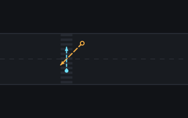 |
Occluded Emergence occluded-emergenceThe cyclist is first seen 4 m from the crosswalk, as if appearing from behind an obstacle, and cuts diagonally across the path of a slow pedestrian. |
edge-case | alert | 6.5 s | 1 person, 1 bike |
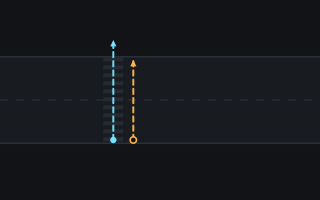 |
Parallel Paths parallel-pathsA cyclist rides across the road 3 m to the side of a crossing pedestrian, at the same speed and heading; the gap stays at 3 m. |
safe-crossing | warning | 8.5 s | 1 person, 1 bike |
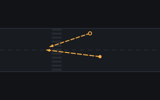 |
Bikes Only bikes-onlyTwo cyclists ride through the crosswalk area and nobody is on foot. |
safe-crossing | idle | 5.5 s | 2 bike |
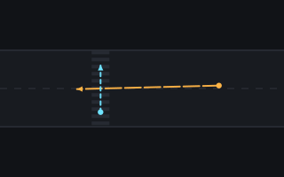 |
Fast Approach fast-approachAn e-bike at 12 m/s appears 20 m out and rides straight through the crosswalk while a pedestrian is on it. |
high-speed | alert | 6.5 s | 1 person, 1 ebike |
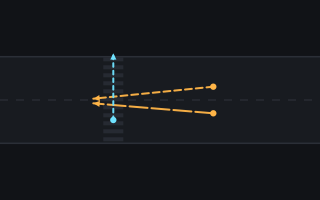 |
Speed Variant speed-variantA slow pedestrian crosses while a cyclist at 3 m/s and then a second at 10 m/s ride through the crosswalk on either side of the centre line. |
standard-approach | alert | 10.5 s | 1 person, 2 bike |
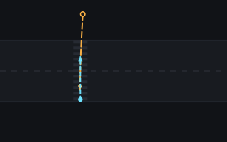 |
Counter-Flow on Crosswalk counter-flow-on-crosswalkA cyclist rides along the crosswalk itself, head-on towards a pedestrian walking the other way. |
standard-approach | alert | 6.5 s | 1 person, 1 bike |
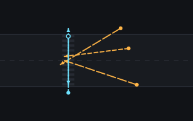 |
Multi-Speed Converging multi-speed-convergingTwo pedestrians cross in opposite directions while three cyclists at different speeds converge on the crosswalk from different angles. |
multi-agent | alert | 8.5 s | 2 person, 3 bike |
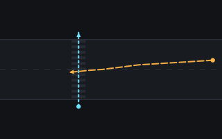 |
Wheelchair User wheelchair-userA wheelchair user crosses at 0.6 m/s and is still on the crosswalk when a cyclist rides through it at speed. |
accessibility | alert | 27.2 s | 1 wheelchair, 1 bike |
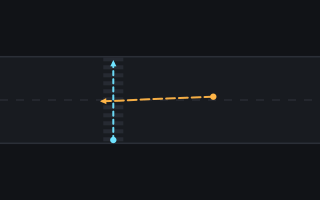 |
Stopped Pedestrian stopped-pedestrianA pedestrian stops in the middle of the crosswalk for 4 s to look at a phone. A cyclist rides through the stopping point. |
edge-case | alert | 13.5 s | 1 person, 1 bike |
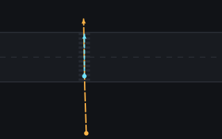 |
Cross-Street Cyclist cross-street-cyclistA cyclist coming from the cross street rides along the crosswalk at 6 m/s, through a pedestrian who is crossing in the same direction. |
standard-approach | alert | 8.5 s | 1 person, 1 bike |
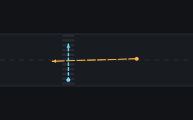 |
E-Scooter e-scooterAn e-scooter at about 7 m/s rides along the road through the crosswalk while a pedestrian is crossing. |
high-speed | alert | 7.5 s | 1 person, 1 escooter |
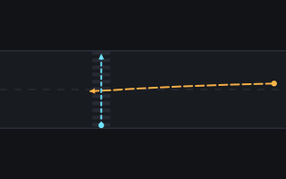 |
Child Pedestrian child-pedestrianA child crosses at 0.9 m/s, so is exposed on the crosswalk for longer, and a cyclist rides through at up to 8 m/s. |
accessibility | alert | 13.8 s | 1 child, 1 bike |
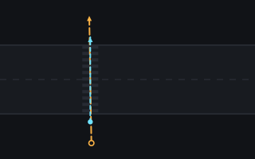 |
Overtake from Behind overtake-from-behindA cyclist rides along the crosswalk in the same direction as a pedestrian and passes through them from behind at 4 m/s. |
standard-approach | alert | 12.5 s | 1 person, 1 bike |
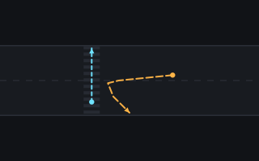 |
Cyclist Abort cyclist-abortA cyclist heads for the crosswalk, then turns away 3 m short of it and leaves, so the threat resolves. |
non-linear | safe | 8.0 s | 1 person, 1 bike |
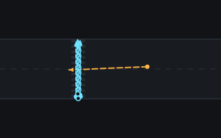 |
Dense Pedestrian Group dense-pedestrian-groupEight pedestrians cross together as a tight group and a cyclist rides into it. |
multi-agent | alert | 10.4 s | 8 person, 1 bike |
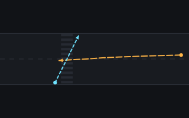 |
Diagonal Jaywalker diagonal-jaywalkerA pedestrian crosses diagonally across the road beside the marked crosswalk while a cyclist comes along the road. |
edge-case | alert | 9.5 s | 1 person, 1 bike |
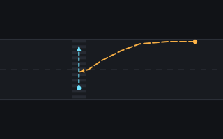 |
Swerving Cyclist swerving-cyclistA cyclist riding along the far side of the road swerves across it towards the pedestrian on the crosswalk. |
non-linear | alert | 8.0 s | 1 person, 1 bike |
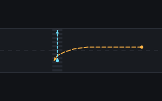 |
Late Turn Toward Ped late-turn-toward-pedA cyclist rides parallel to the kerb, then turns late across the crosswalk into the pedestrian. |
non-linear | alert | 7.5 s | 1 person, 1 bike |
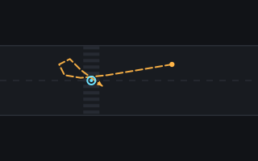 |
U-Turn Cyclist u-turn-cyclistA cyclist passes a pedestrian standing on the crosswalk, makes a U-turn and comes back through them. |
non-linear | alert | 8.5 s | 1 person, 1 bike |
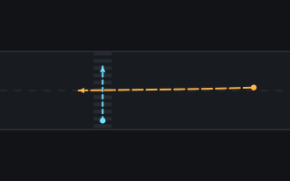 |
Accelerating E-Bike accelerating-e-bikeAn e-bike accelerates from 3 m/s to 8 m/s on the way to the crosswalk while a pedestrian is crossing. |
high-speed | alert | 7.5 s | 1 person, 1 ebike |
The same data is available from python -m bikeped.scenarios list --suite conformance and, for one scenario, python -m bikeped.scenarios show ID.